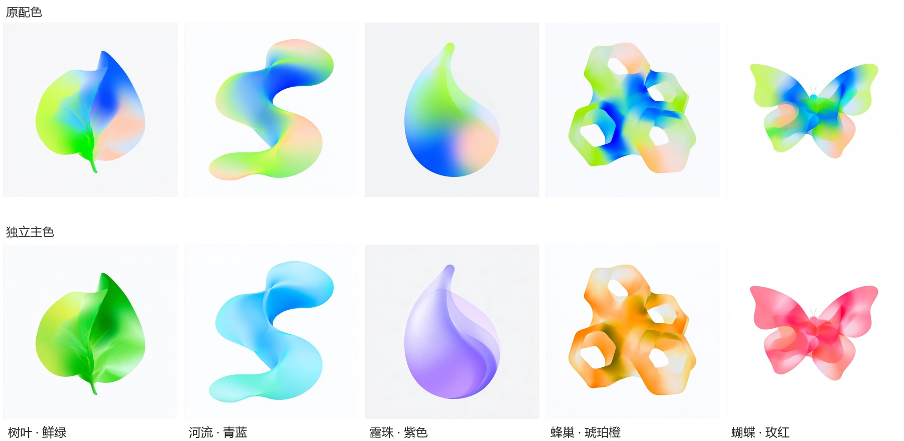

完整对照 · 原有与新增同时展示
设计的生境 · 全部元素
查看本轮自审后修改对照 → · 晶体、贝壳、池塘通过助手本轮自审后更新；菌丝沿用根系式自然网络。待用户确认。
四组风格，每组 11 个元素：前 5 个为原有图片，后 6 个为本次新增初选。共 44 张。下面另附 GitHub 已归档的原始多彩配色和羽毛场景，不计作额外完整元素风格组。
核查范围：2026-11-12 远端 main（9e0672b）、全部远端分支与标签、当前可达提交历史。未发现额外完整图片组；本次新增 24 张及修订记录已纳入项目归档。
其他已归档内容
除四组元素外，仓库还保留以下内容。当前文件与历史核对未发现第五或第六组完整元素风格。
A 组原始多彩配色 → 独立主色
同一组五个元素的配色版本对照；原始多彩版以这张对照图保存在仓库，没有额外五张独立原图文件。

羽毛笔与静水 · 独立场景项目
一个选定场景、三个同轮候选，以及一个局部编辑输入。它们是场景创作归档，不属于自然元素分类图标组。当前选定图仍待用户确认。